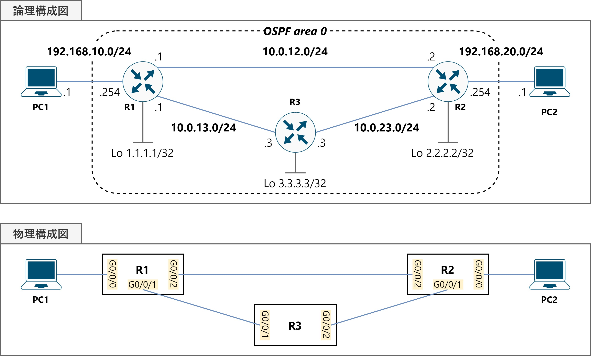

演習02OSPF
構成図
課題
R1-3でOSPFによる動的ルーティングを行い，PC1⇔PC2の間の通信を可能にしてください。
なお，問題ファイルでは次の設定項目は完了しています。
- 機器配置
- PC1-2のIPアドレス付与・デフォルトゲートウェイ設定
- R1-3のホスト名設定
- 機器間のケーブル接続
パラメータ
●IPアドレス
| ホスト名 | I/F名 | IPアドレス | サブネットマスク |
|---|---|---|---|
| R1 | G0/0/0 | 192.168.10.254 | 255.255.255.0 |
| G0/0/1 | 10.0.13.1 | 255.255.255.0 | |
| G0/0/2 | 10.0.12.1 | 255.255.255.0 | |
| Lo0 | 1.1.1.1 | 255.255.255.255 | |
| R2 | G0/0/0 | 192.168.20.254 | 255.255.255.0 |
| G0/0/1 | 10.0.23.2 | 255.255.255.0 | |
| G0/0/2 | 10.0.12.2 | 255.255.255.0 | |
| Lo0 | 2.2.2.2 | 255.255.255.255 | |
| R3 | G0/0/1 | 10.0.13.3 | 255.255.255.0 |
| G0/0/2 | 10.0.23.3 | 255.255.255.0 | |
| Lo0 | 3.3.3.3 | 255.255.255.255 |
| ホスト名 | IPアドレス | サブネットマスク | デフォルトGW |
|---|---|---|---|
| PC1 | 192.168.10.1 | 255.255.255.0 | 192.168.10.254 |
| PC2 | 192.168.20.1 | 255.255.255.0 | 192.168.20.254 |
●OSPF
| ホスト名 | プロセスID | 有効化するI/F | エリア | passive I/F |
|---|---|---|---|---|
| R1 | 1 | G0/0/0・G0/0/1・G0/0/2 | 0（バックボーン） | G0/0/0 |
| R2 | 1 | G0/0/0・G0/0/1・G0/0/2 | 0（バックボーン） | G0/0/0 |
| R3 | 1 | G0/0/1・G0/0/2 | 0（バックボーン） | なし |
手順
⑴ R1-3の物理I/FおよびループバックI/Fを有効化し，IPアドレスを設定する。
⑵ R1-3にOSPFの設定を行う。
⑶ R1のPC1に、R2のPC2につながるI/Fを，passive I/Fに設定する。
⑷ お互いがOSPFネイバーとなったことを確認する。
⑸ R1-2のルーティングテーブルを見て，R1にPC2，R2にPC1のネットワークへのルートが存在することを確認する。
⑹ PC1⇒PC2，PC2⇒PC1へtracertを行い，R1-R2間のリンクを経由して通信できることを確認する。
⑺ R1のG0/0/2の帯域幅を10Mbpsに変更する。
⑻ PC1⇒PC2へtracertを行い，R1-R3-R2間のリンクを経由した経路に変化したことを確認する。
使用するコマンド
router ospf ＜プロセスID＞network ＜ネットワークアドレス＞ ＜ワイルドカードマスク＞ area ＜エリア番号＞passive-interface ＜I/F名＞show ip ospf neighborbandwidth ＜帯域幅(kbps)＞
解説
⑴ R1-3の物理I/FおよびループバックI/Fを有効化し，IPアドレスを設定する。
演習01の復習です。
ループバックI/Fとは，ルータ内部の仮想的なI/Fで，OSPFではルータIDの決定に使用されます。
R1# configure terminal
R1(config)# interface g0/0/0
R1(config-if)# ip address 192.168.10.254 255.255.255.0
R1(config-if)# no shutdown
R1(config)# interface g0/0/1
R1(config-if)# ip address 10.0.13.1 255.255.255.0
R1(config-if)# no shutdown
R1(config-if)# interface g0/0/2
R1(config-if)# ip address 10.0.12.1 255.255.255.0
R1(config-if)# no shutdown
R1(config-if)# interface Loopback0
R1(config-if)# ip address 1.1.1.1 255.255.255.255
R1(config-if)# exit
R1(config)#
⑵ R1-3にOSPFの設定を行う。
router ospfコマンドで，OSPFを起動します。
networkコマンドで，NWアドレスとワイルドカードマスクを使用してOSPFを有効化するI/Fを指定します。
R1(config)# router ospf 1
R1(config-router)# network 192.168.10.0 0.0.0.255 area 0
R1(config-router)# network 10.0.12.0 0.0.0.255 area 0
R1(config-router)# network 10.0.13.0 0.0.0.255 area 0
R2(config)# router ospf 1
R2(config-router)# network 192.168.20.0 0.0.0.255 area 0
R2(config-router)# network 10.0.12.0 0.0.0.255 area 0
R2(config-router)# network 10.0.23.0 0.0.0.255 area 0
R3(config)# router ospf 1
R3(config-router)# network 10.0.13.0 0.0.0.255 area 0
R3(config-router)# network 10.0.23.0 0.0.0.255 area 0
R3(config-router)# exit
R3(config)#
⑶ R1のPC1に、R2のPC2につながるI/Fを，passive I/Fに設定する。
OSPFでは，Helloパケットの定期的な交換による死活監視を行いますが，
対向機器がない，もしくはPCやサーバなどのエンドポイントである場合，Helloパケットを送るだけムダになってしまいます。
そこで，このようなI/FからはHelloパケットの送受信を止め，不必要な通信を行わないように設定することができます。
これを，passive I/Fと呼びます。
passive-interfaceコマンドで，物理I/Fをpassive I/Fに設定します。
R1(config-router)# passive-interface G0/0/0
R1(config-router)# exit
R1(config)#
R2(config-router)# passive-interface G0/0/0
R2(config-router)# exit
R2(config)#
⑷ お互いがOSPFネイバーとなったことを確認する。
show ip ospf neighborコマンドで，OSPFネイバーテーブルを確認します。
“Neighbor ID”はOSPFのルータIDを示しており，⑴で設定したループバックI/FのIPアドレスと同じ値になっているはずです。
“State”の値が“FULL”になっていれば，ネイバー関係が成立し，LSDBの同期が完了した状態です。
以下に，R1でshow ip ospf neighborを実行した結果を示します。

⑸ R1-2のルーティングテーブルを見て，R1にPC2，R2にPC1のネットワークへのルートが存在することを確認する。
これも演習01の復習です。show ip routeコマンドで，各ルータのルーティングテーブルを確認しましょう。
なお，先頭の「O」は，OSPFによって学習したルートであることを表しています。
以下に，R1でshow ip routeを実行した結果を示します。

⑹ PC1⇒PC2，PC2⇒PC1へtracertを行い，R1-R2間のリンクを経由して通信できることを確認する。
下図の通り，R1-R2間のリンクを経由していることが分かります。

⑺ R1のG0/0/2の帯域幅を10Mbpsに変更する。
OSPFはリンク状態型の動的ルーティングプロトコルで，メトリックとして帯域幅を元に算出されるコストを用いています。ある経路のコストの合計をパスコストと呼びますが，その計算には以下のようなルールがあります。
- パケットがその機器から出力されるとき，出力I/Fの帯域幅に応じたコストを加算する。
- デフォルトでは，コストは「100Mbps÷出力I/Fの帯域幅」で算出する。
この構成だと，全てのI/FがGbEであるため，100Mbps÷1Gbps＝0.1ですが，切上げて1となります。しかし，例えばI/Fが10Mbpsだと，そのI/Fでは100Mbps÷10Mbps＝10がコストに加算されることになります。
I/Fの帯域幅はbandwidthコマンドで変更することができます。このシナリオでは，R1のG0/0/2の帯域幅を10Mbpsに変更し，経路選択への影響を確かめます。
R1(config)# interface G0/0/2
R1(config-if)# bandwidth 10000
R1(config-if)# end
R1#
⑻ PC1⇒PC2へtracertを行い，R1-R3-R2間のリンクを経由した経路に変化したことを確認する。
PC1からPC2の通信は，下図の通りR1-R3-R2間のリンクを経由するように変化しました。

R1のG0/0/2の帯域幅が10Mbpsになったことで，
- R1-R2間のリンク経由：10
- R1-R3-R2間のリンク経由：1＋1＝2
となり，よりコストの少ない経路が選択されるようになったためです。
なお，PC2からPC1の通信は，帯域幅変更の影響を受けないので，変わらずR2-R1間のリンクを経由した経路をとります。コストは，あくまでも出力時に加算されるためです。